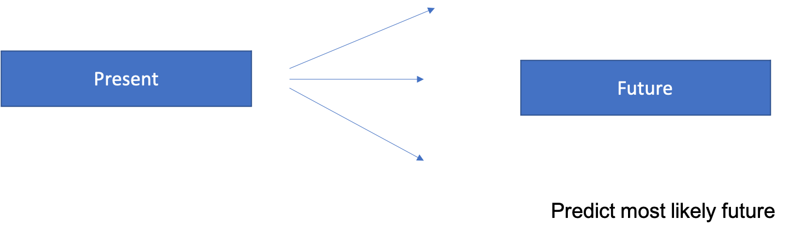
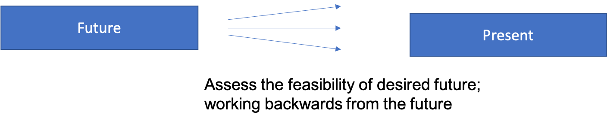

This mini-lecture introduces different methods to develop infrastructure strategies and outlines each method in more detail. These include:
A traditional means by which to assess and plan for the future is scenario planning.
Scenario planning typically aims to develop overall visions of future systems states, with various future conditions and policy assumptions and pathways towards each version, thereby embracing the concept of multiple possible futures (Bradfield2005?).
These scenarios are often described as narratives of possible paths into the future, and can be differentiated into three classes:
Within these various scenario generation exercises, it is useful to distinguish between endogenous (incorporating various policy/intervention options) and exogenous scenarios (outside of the control of actors) (Hickford2015?). Endogenous t scenarios include strategies of alternative futures, mapping a ‘possibility space,’ whilst exogenous scenarios include population, economy or climate scenarios.
Exogenous scenarios are useful in exploring uncertainties with respect to future socio-economic or climate scenarios (as covered in lecture block 4).
Here we focus on the endogenous scenario generation literature to identify sets of infrastructure interventions, which can be combined into infrastructure strategies.
This mini-lecture will explore how to use (1) foresight methods, (2) strategic backcasting, or (3) content analysis to generate infrastructure strategies, and finally (4) reflect on using hybrid methods.
Foresight methods, such as Delphi methods, were first developed in the 1950s, and seek agreement on future trends from a wide range of experts (Gordon1964?). These experts respond to sets of questions, review answers and revise their views in an iterative fashion. Answers are then presented anonymously to reduce the subjectivity of more influential group members (Lempert2009?). Delphi methods can be used to generate infrastructure strategies, by inviting leaders from different sectors, including government, business, science, technology or academia, to come together in workshops or focus groups to exchange views on future developments and decide on certain interventions (Georghiou2008?). Consensus is typically the main objective in most foresight methods.

Figure 6.2.1: Overview of foresight method: working from a present state and envisioning different strategies into the future.
In the development of preferred future options, backcasting methods can be used.
The backcasting method works backwards from a particular normative vision to present interventions by visioning futures and developing agendas or policy measures to achieve the vision. This method – similar to foresight methods – is a participatory means by which different stakeholders can come together to develop infrastructure strategies (Fuldauer2019?).
Research has argued that effective backcasting studies can bridge the gap between research and action, by involving various stakeholders to envision desirable futures, collecting data and generating strategies, thereby helping to overcome the implementation gap (Banister2013?).
In the context of infrastructure strategy generation, strategic backcasting can be used by inviting various stakeholders to work backwards from national or global targets, such as development or climate targets, and identify sets of interventions (then grouped in strategies) to reach these targets. Unlike in most foresight studies, consensus is not one of the main objectives of backcasting. Instead, the aim of the backcasting process is to group different investment under contrasting visions, which allows the portfolio of strategies to be diversified.

Figure 6.2.2: Overview of backcasting method: working from a future state and envisioning different strategies to achieve it.
Content analysis is another means by which to identify infrastructure interventions, which can be grouped and categorised into different strategies.
National policy documents, feasibility studies, infrastructure sector reports or regional studies and targets can be used to identify interventions or policies considered feasible. These interventions can be classified according to their likelihood of implementation: confirmed, proposed, or potential (Adshead2021?).
Some interventions or policies might already by confirmed in certain policy documents or by different funders. Other interventions may be proposed in planning documents or national/regional reports. Yet other interventions may neither be confirmed nor proposed by national policy documents of feasibility studies, but could instead by identified through content analysis at the regional level. This could include adopting interventions that have been confirmed or proposed in similar or neighbouring countries, and which can provide examples of interventions not otherwise accounted for in existing reports or documents.
Having identified sets of interventions through either participatory forecasting/ backcasting or through content analysis methods, these interventions can then be organised by broader categories of infrastructure system transformations, such as behavioural change, system efficiencies, capacity investments, etc. (Otto2016?). Alternatively, these interventions can also be organised around global development or climate outcomes (Adshead2021?) or sets of normative visions (e.g. circular economy; technology-led focus (Fuldauer2019?)). This step of reorganising specific interventions is most useful when interventions have been identified through foresight or content-analysis methods, as these typically lack specific vision-setting at the outset of the process. Conversely, backcasting methods can be used strategically to develop strategies, which are then assigned sets of infrastructure interventions.
The above summary of different methods to develop infrastructure strategies points to the usefulness of using hybrid methods. Participatory methods such as backcasting can be used to develop the classifications of infrastructure strategies in the first place (such as behavioural change, system efficiencies, development-aligned strategies). Participatory methods can then be combined with content analysis methods to identify lists of confirmed, proposed or potential interventions under each of the proposed infrastructure strategies.
The process of infrastructure strategy generation can be repeated for each sector, or explicitly be applied to consider cross-sectoral infrastructure strategies. Typically, various infrastructure strategies are compared to the case of ‘inaction.’ ‘Inaction’ is not strictly a strategy but serves as a counterfactual to understand the extent of infrastructure performance decline in the case of inaction with respect to interventions, and increasing demand for infrastructure services.
This lecture introduced the concept of endogenous infrastructure strategy development. Participatory forecasting, backcasting or content analysis methods can be used to develop various infrastructure interventions, which can be grouped under certain infrastructure strategies. Hybrid approaches may use backcasting to develop infrastructure strategies, and further use content analysis in combination with forecasting to identify sets of interventions or policies under these strategies.